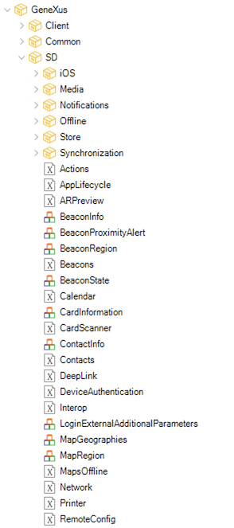
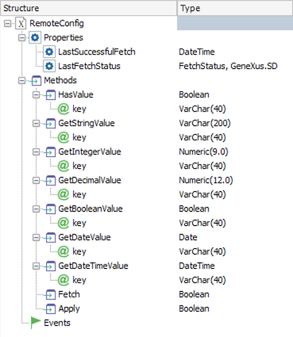

RemoteConfig external object allows interacting with a remote configuration service to fetch new configuration values and apply them, and also to read the values for a given configuration.
|  |  |
Indicates the timestamp of the last time the configuration was fetched successfully from the server.
| Return value | DateTime |
Note:
Returns the last fetch status.
| Return value | FetchStatus |
Returns True if there is a value with the given key (being it a default value or a value fetched from the server), False otherwise.
| Return value | Boolean |
| Parameters | Key: VarChar(40) |
Returns the configured value for the given key as a String.
| Return value | VarChar(200) |
| Parameters | Key: VarChar(40) |
Considerations:
Returns the configured value for the given key as a number without decimals.
| Return value | Numeric(9.0) |
| Parameters | Key: VarChar(40) |
Considerations: same consideration as from GetStringValue apply.
Returns the configured value for the given key as a number with decimals.
| Return value | Numeric(12.3) |
| Parameters | Key: VarChar(40) |
Considerations: same consideration as from GetStringValue apply.
Returns the configured value for the given key as boolean.
| Return value | Boolean |
| Parameters | Key: VarChar(40) |
Considerations: same consideration as from GetStringValue apply.
Returns the configured value for the given key as a date.
| Return value | Date |
| Parameters | Key: VarChar(40) |
Considerations: same consideration as from GetStringValue apply.
Returns the configured value for the given key as a date-time.
| Return value | DateTime |
| Parameters | Key: VarChar(40) |
Considerations: same consideration as from GetStringValue apply.
Tries to get the values synchronically from the server. Returns True if successful, False otherwise.
| Return value | Boolean |
| Parameters | (none) |
If the Remote Configuration Provider is set to None, this method returns False and finishes immediately.
Tries to apply the values fetched by the last fetch operation (being it automatic or manual). Returns True if successful, False otherwise.
| Return value | Boolean |
| Parameters | (none) |
If the Remote Configuration Provider is set to None or if there are no fetched values, this method returns False and finishes immediately.
Enumerated domain returned by the LastFetchStatus property.
| Value | Description |
|---|---|
| None | The Fetch operation has never been performed |
| Sucess | The last Fecth operation ended successfuly |
| Failure | The last Fecth operation could not be completed |
See the Examples section in Remote Configuration in Native Mobile apps.
| Platforms | Native Mobile (Android, iOS) |
This external object is available as form GeneXus 17 upgrade 4.